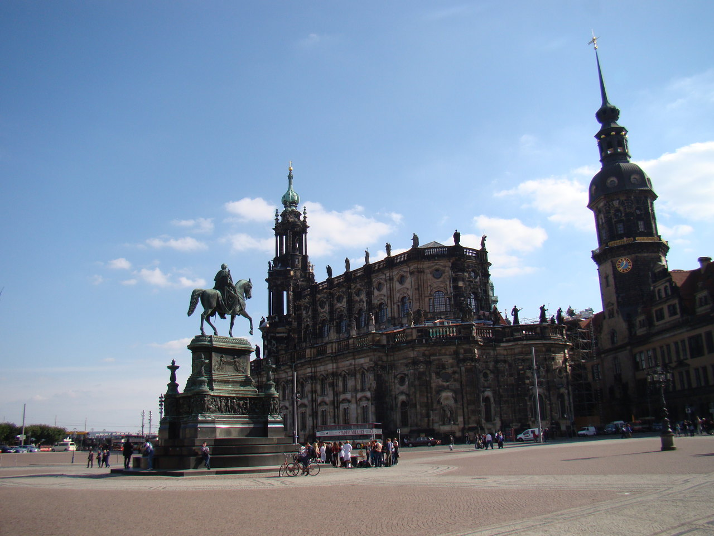

Дрезден
#europe #germany Смеркалось. Одновременно с этим мы выехали из Берлина. И выехали мы ни куда-нибудь, а, на настоящий немецкий автобан. Рекомендованная скорость – 130 км/ч, как же тут не испытать своего верного железного коня. 120, 140 – нормально, 160, 170 – уже как-то непривычно быстро, газ “в пол” и скорость уже 190 км/ч – расслабленная поза “одна рука на руле, вторая на рычаге КПП” быстро превращается в позу “ученик на экзамене”, обе руки на руль, внимательный взгляд на дорогу и глаза по 5 копеек. Машина держит дорогу хорошо, но начинают посвистывать боковые зеркала. До 190 км/ч fluence разгоняется без проблем, дальше – очень медленно, прибавляется по 3-4км/ч за минуту. В общем, испытал я коня и дальше мы поехали 140-150 км/ч, так как-то спокойнее, все-таки не такой большой опыт вождения автомобиля на таких скоростях.
Надо сказать, что у нас был забронирован номер в отеле Hotel am Bonhoefferplatz, который мы так и не смогли оценить по достоинству. Дело в том, что есть у этого отеля один нюанс: стойка регистрации работает до 12 часов ночи. Если вы прибыли позже – извините. Мы прибыли в 23:55. Дверь ресепшена – закрыта, на двери – записка на немецком с каким-то телефоном в локальном формате. По указанному телефону ответил хозяин отеля (насколько я понял), который очень-очень-очень плохо говорит по-английски со словарем. На просьбу подъехать к ресепшену я слышал либо молчание, либо немецкую скороговорку. Единственное, что я уловил, это то, что ключ от нашего номера он спрятал где-то в отеле. Деньги на моем телефоне закончились, и связь оборвалась, но, не стоит отчаиваться, дорогой читатель, ведь начинается приключение!
Включив подсветку телефона, мы отправились по этажам отеля в поисках ключа. Были прочесаны и обследованы все этажи отеля, подсобные помещения, пустые емкости, трещины в стенах, а также подоконники, цветочные горшки и почтовый ящик. Ключ найден не был. Без артефакта типа “ключ” перемещение в локацию типа «номер» невозможно. Немного почесав затылок, мы поняли, что все-таки это не компьютерный квест, а реальная жизнь. Ночной ветерок приятно отрезвлял голову и прогонял подходящий сон. Мы достали навигатор, и нашли там первый попавшийся отель, в котором в итоге и остановились. Этим отелем оказался Artotel . Отель отличный и очень своеобразный. Дизайнерский все-таки. Например, некоторые туристы находят шкаф в номере только на второй день. И все в таком же духе. Завтраки хорошие, закрытая подземная парковка. Парковка, правда, дороговата – в районе 15 евро. На этом “отельный квест” закончился, но по приезду домой – последовало продолжение. Дяденька из Hotel am Bonhoefferplatz удержал полную стоимость номера с карты, несмотря на то, что он сам нас не смог заселить. Кроме того, даже при не заселении по вине туристов, по условию нашего бронирования удерживается 80% стоимости, но никак не 100%. На данный момент booking.com разбирается в ситуации и обещает все вернуть, что получится в итоге – напишу позже.
Итак, плотно позавтракав, мы вышли из отеля. Ночью нам показалось, что мы находимся на самой окраине Дрездена, но, как оказалось, нужно было просто “завернуть за угол” и, вот он центр. Расположение отеля замечательное. Первой достопримечательностью был красивый пруд с уточками. Мы решили сделать пару фотографий. Потом мы заметили интересное здание на противоположном берегу и средневековую башню и решили подойти поближе. Когда мы вышли на площадь старого города, мы, мягко говоря “впечатлились”. Нас поразила атмосфера, которой была наполнена сама площадь, наполнено каждое здание, каждый монумент и брусчатка под ногами. Было ощущение что мы попали в средневековье, то самое, которое показывают в таких фильмах как Шерлок Холмс или Иллюзионист. Картину дополняли оперная певица и музыканты со скрипками, которые играют на площади. Короче говоря, нет слов, только эмоции. Мы долго бродили по старинным улочкам, аркам и переходам, поднимались по ступенькам, прогуливались по набережной Эльбы, пока не решили зайти в торговый центр.


Я не буду писать много о шопинге в Европе, но скажу честно, что такого я не ожидал. Вышли мы из торгового центра с четырьмя большими пакетами. За те же деньги, за которые у нас можно купить одну кофту или куртку, там можно купить штуки три (без преувеличения), и качество этих вещей будет выгодно отличаться от наших. Я уже не говорю о том, что можно приехать в сезон скидок, а еще и вернуть на границе tax free. Как раз вчера мы ходили в наш торговый центр. Покупать вещи, я вам скажу, морально, стало сложнее. Жаба, после того что ты видишь в Европе, подросла и окрепла.
После торгового центра мы зашли на местную ярмарку. Настоящую, с пряниками, медовухой и праздничной атмосферой. Представляю, что здесь творится перед Рождеством. Прогулявшись еще немного по старому Дрездену, мы отправились на ужин. Ресторан мы выбирали заранее на tripadvisor.ru, выбирали именно немецкую кухню. Выбор пал на Schillergarten. Несмотря на то, что до ресторана от центра надо было ехать, мы ни разу не пожалели о своем выборе. Очень клевая атмосфера и отличная кухня. Я заказал половину свиной рульки и мне принесли именно половину рульки здорового кабана, чего я, мягко говоря, не ожидал, после русских ресторанных порций. Цены – приемлемые, а при учете размеров порций – низкие. С удовольствием посетим заведение снова, при первой же возможности.